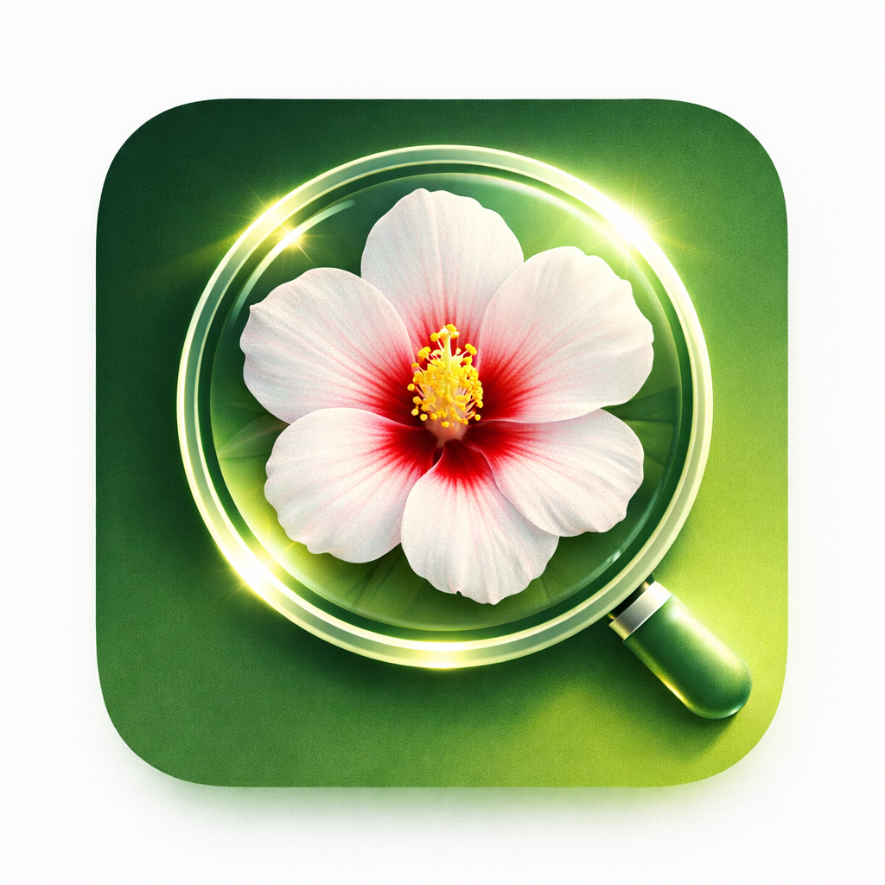

최종 업데이트 / Last updated / 最終更新: 2026-07-06
산책도감(이하 "앱")은 이용자의 개인정보를 소중히 여기며, 최소한의 정보만을 처리합니다. 본 앱은 회원가입이 없으며 계정 정보를 수집하지 않습니다.
사진/이미지: 동식물 종 식별을 위해, 이용자가 촬영하거나 선택한 사진을 AI 처리 서버(및 제휴 AI 제공사)로 전송하여 분석합니다. 사진은 식별 결과 제공 목적으로만 사용되며, 앱의 도감 데이터는 이용자 기기에 저장됩니다.
위치 정보: 발견 지점을 지도에 표시하기 위해 사용합니다. 위치 정보는 이용자 기기 내에만 저장되며 서버로 전송되지 않습니다.
음성/텍스트 요청: 종 설명 음성 안내(TTS)와 질문 답변을 위해 관련 텍스트가 AI 처리 서버로 전송됩니다.
식별·일러스트·음성·질의응답 기능은 AI 처리 서버(Supabase 기반)를 경유해 OpenAI, Anthropic 등 AI 제공사의 API로 처리됩니다. 전송되는 데이터는 해당 기능 수행에만 사용되며, 광고·추적 목적으로 사용하지 않습니다. 각 제공사의 데이터 처리 정책이 적용됩니다.
도감·발견 기록·위치 등 이용자 데이터는 기기에 로컬 저장되며, 앱 삭제 시 함께 삭제됩니다. 설정에서 언제든 전체 데이터를 삭제할 수 있습니다. AI 처리 서버로 전송된 이미지·텍스트는 식별 처리에 필요한 범위에서만 일시적으로 사용됩니다.
본 앱은 Google AdMob을 통해 광고를 게재합니다. 광고 제공 과정에서 Google이 광고 식별자(IDFA), 기기 정보 등을 수집·처리할 수 있습니다. iOS에서는 앱 추적 투명성(ATT) 동의창을 통해 허용한 경우에만 광고 식별자가 맞춤형 광고에 사용되며, 동의하지 않아도 앱의 모든 기능을 그대로 사용할 수 있고 비맞춤형 광고가 표시됩니다. Google의 광고 데이터 처리 방식은 policies.google.com/technologies/partner-sites 를 참조하세요.
프리미엄 구독 시 모든 광고가 제거됩니다. 구독 결제는 Apple App Store가 처리하며, 앱은 결제 확인을 위해 구매 영수증(거래 정보)만 자체 검증 서버로 전송합니다. 이름·카드번호 등 개인 결제 정보는 앱과 서버에 전달되지 않습니다.
본 앱은 특정 연령을 대상으로 개인정보를 수집하지 않으며, 계정 정보를 수집하지 않습니다.
이용자는 기기 내 데이터를 언제든 삭제할 수 있습니다.
문의: jejuolledev@gmail.com
본 방침은 개정될 수 있으며, 변경 시 본 페이지에 게시합니다.
NatureSnap ("the App") respects your privacy and processes only the minimum necessary information. The App has no sign-up and does not collect account information.
Photos / images: To identify species, photos you take or select are sent to our AI processing server (and partner AI providers) for analysis. Photos are used only to return identification results; your collection data is stored on your device.
Location: Used to show discovery points on the map. Location is stored only on your device and is not sent to our servers.
Voice / text requests: For audio guides (TTS) and Q&A, the relevant text is sent to the AI processing server.
Identification, illustration, audio, and Q&A features are processed via an AI server (built on Supabase) and the APIs of AI providers such as OpenAI and Anthropic. Transmitted data is used solely to perform these features and never for advertising or tracking. Each provider's data policies apply.
Your data (collection, discovery records, location) is stored locally on your device and is removed when you delete the App. You can erase all data at any time from Settings. Images and text sent to the AI server are used only transiently, as needed for identification.
The App shows ads served by Google AdMob. To serve ads, Google may collect and process advertising identifiers (IDFA), device information, and similar data. On iOS, the advertising identifier is used for personalized ads only if you allow it via the App Tracking Transparency (ATT) prompt; if you decline, you can still use every feature and will see non-personalized ads. See policies.google.com/technologies/partner-sites for how Google processes ad data.
A Premium subscription removes all ads. Subscription payments are handled by the Apple App Store; the App sends only the purchase receipt (transaction data) to our verification server to confirm the purchase. Your name, card number, and other personal payment details never reach the App or our servers.
The App does not collect personal information targeted at any specific age group and collects no account data.
You can delete your on-device data at any time.
Contact: jejuolledev@gmail.com
This policy may be updated; changes will be posted on this page.
散歩図鑑（以下「本アプリ」）は、利用者のプライバシーを尊重し、必要最小限の情報のみを処理します。本アプリは会員登録がなく、アカウント情報を収集しません。
写真・画像： 動植物の識別のため、利用者が撮影または選択した写真をAI処理サーバー（および提携AI提供者）へ送信して分析します。写真は識別結果の提供のみに使用され、図鑑データは端末に保存されます。
位置情報： 発見地点を地図に表示するために使用します。位置情報は端末内にのみ保存され、サーバーには送信されません。
音声・テキスト要求： 音声ガイド（TTS）や質問応答のため、関連テキストがAI処理サーバーへ送信されます。
識別・イラスト・音声・質問応答の機能は、AI処理サーバー（Supabase基盤）を経由し、OpenAI・Anthropic等のAI提供者のAPIで処理されます。送信データは当該機能の実行のみに使用され、広告・追跡には使用しません。各提供者のデータポリシーが適用されます。
図鑑・発見記録・位置などの利用者データは端末にローカル保存され、アプリ削除時に削除されます。設定からいつでも全データを削除できます。AI処理サーバーへ送信された画像・テキストは、識別処理に必要な範囲で一時的にのみ使用されます。
本アプリはGoogle AdMobを通じて広告を表示します。広告配信の過程で、Googleが広告識別子（IDFA）や端末情報などを収集・処理する場合があります。iOSではアプリのトラッキングの透明性（ATT）の同意を得た場合にのみ広告識別子がパーソナライズ広告に使用され、同意しなくてもすべての機能をそのまま利用でき、非パーソナライズ広告が表示されます。Googleの広告データの取り扱いは policies.google.com/technologies/partner-sites をご参照ください。
プレミアム購読ですべての広告が削除されます。購読の決済はApple App Storeが処理し、本アプリは購入確認のため購入レシート（取引情報）のみを検証サーバーへ送信します。氏名・カード番号などの個人決済情報がアプリやサーバーに渡ることはありません。
本アプリは特定年齢層を対象とした個人情報を収集せず、アカウント情報も収集しません。
利用者はいつでも端末内データを削除できます。
お問い合わせ：jejuolledev@gmail.com
本ポリシーは改定される場合があり、変更時は本ページに掲載します。